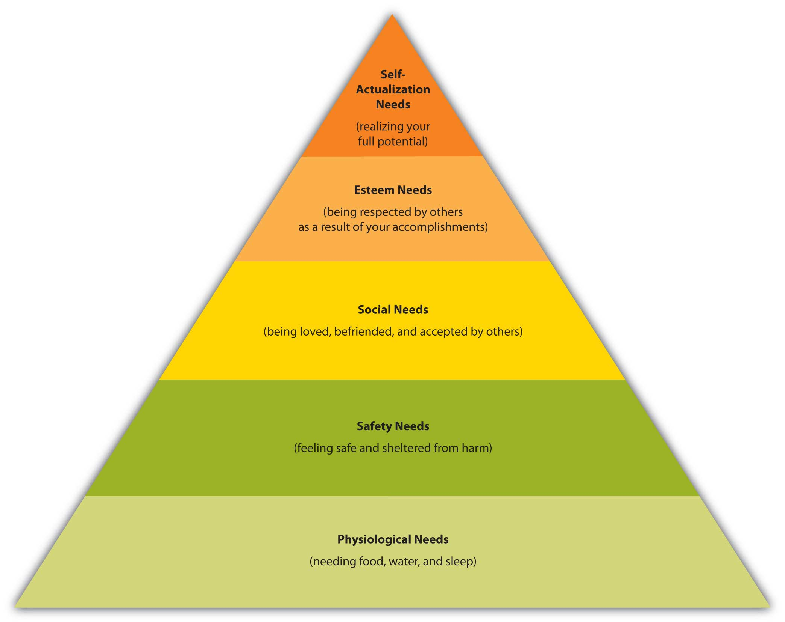

You’ve been a consumer with purchasing power for much longer than you probably realize—since the first time you were asked which cereal or toy you wanted. Over the years, you’ve developed rules of thumb or mental shortcuts providing a systematic way to choose among alternatives, even if you aren’t aware of it. Other consumers follow a similar process, but different people, no matter how similar they are, make different purchasing decisions. You might be very interested in purchasing a Smart Car, but your best friend might want to buy a Ford F-150 truck. What factors influenced your decision and what factors influenced your friend’s decision?
As we mentioned earlier in the chapter, consumer behavior is influenced by many things, including environmental and marketing factors, the situation, personal and psychological factors, family, and culture. Businesses try to figure out trends so they can reach the people most likely to buy their products in the most cost-effective way possible. Businesses often try to influence a consumer’s behavior with things they can control such as the layout of a store, music, grouping and availability of products, pricing, and advertising. While some influences may be temporary and others are long lasting, different factors can affect how buyers behave—whether they influence you to make a purchase, buy additional products, or buy nothing at all. Let’s now look at some of the influences on consumer behavior in more detail.
Have you ever been in a department story and couldn’t find your way out? No, you aren’t necessarily directionally challenged. Marketing professionals take physical factors such as a store’s design and layout into account when they are designing their facilities. Presumably, the longer you wander around a facility, the more you will spend. Grocery stores frequently place bread and milk products on the opposite ends of the stores because people often need both types of products. To buy both, they have to walk around an entire store, which of course, is loaded with other items they might see and purchase.
Store locations also influence behavior. Starbucks has done a good job in terms of locating its stores. It has the process down to a science; you can scarcely drive a few miles down the road without passing a Starbucks. You can also buy cups of Starbucks coffee at many grocery stores and in airports—virtually any place where there is foot traffic.
Physical factors that firms can control, such as the layout of a store, music played at stores, the lighting, temperature, and even the smells you experience are called atmosphericsThe physical aspects of the selling environment retailers try to control.. Perhaps you’ve visited the office of an apartment complex and noticed how great it looked and even smelled. It’s no coincidence. The managers of the complex were trying to get you to stay for a while and have a look at their facilities. Research shows that “strategic fragrancing” results in customers staying in stores longer, buying more, and leaving with better impressions of the quality of stores’ services and products. Mirrors near hotel elevators are another example. Hotel operators have found that when people are busy looking at themselves in the mirrors, they don’t feel like they are waiting as long for their elevators.Patricia Moore, “Smells Sell,” NZ Business, February 2008, 26–27.
Not all physical factors are under a company’s control, however. Take weather, for example. Rainy weather can be a boon to some companies, like umbrella makers such as Totes, but a problem for others. Beach resorts, outdoor concert venues, and golf courses suffer when it is raining heavily. Businesses such as automobile dealers also have fewer customers. Who wants to shop for a car in the rain?
Firms often attempt to deal with adverse physical factors such as bad weather by offering specials during unattractive times. For example, many resorts offer consumers discounts to travel to beach locations during hurricane season. Having an online presence is another way to cope with weather-related problems. What could be more comfortable than shopping at home? If it’s raining too hard to drive to the GAP, REI, or Abercrombie & Fitch, you can buy products from these companies and many others online. You can shop online for cars, too, and many restaurants take orders online and deliver.
Crowding is another situational factor. Have you ever left a store and not purchased anything because it was just too crowded? Some studies have shown that consumers feel better about retailers who attempt to prevent overcrowding in their stores. However, other studies have shown that to a certain extent, crowding can have a positive impact on a person’s buying experience. The phenomenon is often referred to as “herd behavior.”Carol J. Gaumer and William C. Leif, “Social Facilitation: Affect and Application in Consumer Buying Situations,” Journal of Food Products Marketing 11, no. 1 (2005): 75–82.
If people are lined up to buy something, you want to know why. Should you get in line to buy it too? Herd behavior helped drive up the price of houses in the mid-2000s before the prices for them rapidly fell. Unfortunately, herd behavior has also led to the deaths of people. In 2008, a store employee was trampled to death by an early morning crowd rushing into a Walmart to snap up holiday bargains.
The social situation you’re in can significantly affect your purchase behavior. Perhaps you have seen Girl Scouts selling cookies outside grocery stores and other retail establishments and purchased nothing from them, but what if your neighbor’s daughter is selling the cookies? Are you going to turn her down or be a friendly neighbor and buy a box (or two)?
Thin Mints, Anyone?
http://www.youtube.com/v/GJHN4eutKjYAre you going to turn down cookies from this cute Girl Scout? What if she’s your neighbor’s daughter? Pass the milk, please!
Companies like Pampered Chef that sell their products at parties understand that the social situation makes a difference. When you’re at a friend’s Pampered Chef party, you don’t want to look cheap or disappoint your friend by not buying anything. Certain social situations can also make you less willing to buy products. You might spend quite a bit of money each month eating at fast-food restaurants like McDonald’s and Subway. Where do you take someone for your first date? Some people might take a first date to Subway, but other people would perhaps choose a restaurant that’s more upscale. Likewise, if you have turned down a drink or dessert on a date because you were worried about what the person you were with might have thought, your consumption was affected by your social situation.Anna S. Matilla and Jochen Wirtz, “The Role of Store Environmental Stimulation and Social Factors on Impulse Purchasing,” Journal of Services Marketing 22, no. 7 (2008): 562–67.
The time of day, time of year, and how much time consumers feel like they have to shop affect what they buy. Researchers have even discovered whether someone is a “morning person” or “evening person” affects shopping patterns. Have you ever gone to the grocery store when you are hungry or after pay day when you have cash in your pocket? When you are hungry or have cash, you may purchase more than you would at other times. Seven-Eleven Japan is a company that’s extremely in tune to time and how it affects buyers. The company’s point-of-sale systems at its checkout counters monitor what is selling well and when, and stores are restocked with those items immediately—sometimes via motorcycle deliveries that zip in and out of traffic along Japan’s crowded streets. The goal is to get the products on the shelves when and where consumers want them. Seven-Eleven Japan also knows that, like Americans, its customers are “time starved.” Shoppers can pay their utility bills, local taxes, and insurance or pension premiums at Seven-Eleven Japan stores, and even make photocopies.Allan Bird, “Retail Industry,” Encyclopedia of Japanese Business and Management (London: Routledge, 2002), 399–400.
Companies worldwide are aware of people’s lack of time and are finding ways to accommodate them. Some doctors’ offices offer drive-through shots for patients who are in a hurry and for elderly patients who find it difficult to get out of their cars. Tickets.com allows companies to sell tickets by sending them to customers’ mobile phones when they call in. The phones’ displays are then read by barcode scanners when the ticket purchasers arrive at the events they’re attending. Likewise, if you need customer service from Amazon.com, there’s no need to wait on the telephone. If you have an account with Amazon, you just click a button on the company’s Web site and an Amazon representative calls you immediately.
The reason you are shopping also affects the amount of time you will spend shopping. Are you making an emergency purchase? What if you need something for an important dinner or a project and only have an hour to get everything? Are you shopping for a gift or for a special occasion? Are you buying something to complete a task/project and need it quickly? In recent years, emergency clinics have sprung up in strip malls all over the country. Convenience is one reason. The other is sheer necessity. If you cut yourself and you are bleeding badly, you’re probably not going to shop around much to find the best clinic. You will go to the one that’s closest to you. The same thing may happen if you need something immediately.
Purchasing a gift might not be an emergency situation, but you might not want to spend much time shopping for it either. Gift certificates have been popular for years. You can purchase gift cards for numerous merchants at your local grocery store or online. By contrast, suppose you need to buy an engagement ring. Sure, you could buy one online in a jiffy, but you probably wouldn’t do that. What if the diamond was fake? What if your significant other turned you down and you had to return the ring? How hard would it be to get back online and return the ring?Jacob Hornik and Giulia Miniero, “Synchrony Effects on Customers’ Responses and Behaviors,” International Journal of Research in Marketing 26, no. 1 (2009): 34–40.
Have you ever felt like going on a shopping spree? At other times wild horses couldn’t drag you to a mall. People’s moods temporarily affect their spending patterns. Some people enjoy shopping. It’s entertaining for them. At the extreme are compulsive spenders who get a temporary “high” from spending.
A sour mood can spoil a consumer’s desire to shop. The crash of the U.S. stock market in 2008 left many people feeling poorer, leading to a dramatic downturn in consumer spending. Penny pinching came into vogue, and conspicuous spending was out. Costco and Walmart experienced heightened sales of their low-cost Kirkland Signature and Great Value brands as consumers scrimped.“Wal-Mart Unveils Plans for Own-Label Revamp,” Financial Times, March 17, 2009, 15. Saks Fifth Avenue wasn’t so lucky. Its annual release of spring fashions usually leads to a feeding frenzy among shoppers, but spring 2009 was different. “We’ve definitely seen a drop-off of this idea of shopping for entertainment,” says Kimberly Grabel, Saks Fifth Avenue’s senior vice president of marketing.Stephanie Rosenbloom (New York Times News Service), “Where Have All the Shoppers Gone?” Fort Worth Star-Telegram, March 18, 2009, 5E. To get buyers in the shopping mood, companies resorted to different measures. The upscale retailer Neiman Marcus began introducing more mid-priced brands. By studying customer’s loyalty cards, the French hypermarket Carrefour hoped to find ways to get its customers to purchase nonfood items that have higher profit margins.
The glum mood wasn’t bad for all businesses though. Discounters like Half-Priced books saw their sales surge. So did seed sellers as people began planting their own gardens. Finally, what about those products (Aqua Globes, Snuggies, and Ped Eggs) you see being hawked on television? Their sales were the best ever. Apparently, consumers too broke to go on vacation or shop at Saks were instead watching television and treating themselves to the products.Alyson Ward, “Products of Our Time,” Fort Worth Star-Telegram, March 7, 2009, 1E.
PersonalityAn individual’s disposition as other people see it. describes a person’s disposition, helps show why people are different, and encompasses a person’s unique traits. The “Big Five” personality traits that psychologists discuss frequently include openness or how open you are to new experiences, conscientiousness or how diligent you are, extraversion or how outgoing or shy you are, agreeableness or how easy you are to get along with, and neuroticism or how prone you are to negative mental states.
Do personality traits predict people’s purchasing behavior? Can companies successfully target certain products to people based on their personalities? How do you find out what personalities consumers have? Are extraverts wild spenders and introverts penny pinchers?
The link between people’s personalities and their buying behavior is somewhat unclear. Some research studies have shown that “sensation seekers,” or people who exhibit extremely high levels of openness, are more likely to respond well to advertising that’s violent and graphic. The problem for firms is figuring out “who’s who” in terms of their personalities.
Marketers have had better luck linking people’s self-concepts to their buying behavior. Your self-conceptHow a person sees himself or herself. is how you see yourself—be it positive or negative. Your ideal selfHow a person would like to view himself or herself. is how you would like to see yourself—whether it’s prettier, more popular, more eco-conscious, or more “goth,” and others’ self-concept, or how you think others see you, also influences your purchase behavior. Marketing researchers believe people buy products to enhance how they feel about themselves—to get themselves closer to their ideal selves.
The slogan “Be All That You Can Be,” which for years was used by the U.S. Army to recruit soldiers, is an attempt to appeal to the self-concept. Presumably, by joining the U.S. Army, you will become a better version of yourself, which will, in turn, improve your life. Many beauty products and cosmetic procedures are advertised in a way that’s supposed to appeal to the ideal self people seek. All of us want products that improve our lives.
While demographic variables such as income, education, and marital status are important, we will look at gender, age, and stage of life and how they influence purchase decisions. Men and women need and buy different products.Cheryl B. Ward and Tran Thuhang, “Consumer Gifting Behaviors: One for You, One for Me?” Services Marketing Quarterly 29, no. 2 (2007): 1–17. They also shop differently and in general, have different attitudes about shopping. You know the old stereotypes. Men see what they want and buy it, but women “try on everything and shop ‘til they drop.” There’s some truth to the stereotypes. That’s why you see so many advertisements directed at one sex or the other—beer commercials that air on ESPN and commercials for household products that air on Lifetime. Women influence fully two-thirds of all household product purchases, whereas men buy about three-quarters of all alcoholic beverages.Genevieve Schmitt, “Hunters and Gatherers,” Dealernews 44, no. 8 (2008): 72. The article references the 2006 Behavioral Tracking Study by Miller Brewing Company. The shopping differences between men and women seem to be changing, though. Younger, well-educated men are less likely to believe grocery shopping is a woman’s job and would be more inclined to bargain shop and use coupons if the coupons were properly targeted at them.Jeanne Hill and Susan K. Harmon, “Male Gender Role Beliefs, Coupon Use and Bargain Hunting,” Academy of Marketing Studies Journal 11, no. 2 (2007): 107–21. One survey found that approximately 45 percent of married men actually like shopping and consider it relaxing.
One study by Resource Interactive, a technology research firm, found that when shopping online, men prefer sites with lots of pictures of products and women prefer to see products online in lifestyle context—say, a lamp in a living room. Women are also twice as likely as men to use viewing tools such as the zoom and rotate buttons and links that allow them to change the color of products.
What Women Want versus What Men Want
http://www.youtube.com/v/yIutgtzwhAcCheck out this Heineken commercial, which highlights the differences between “what women want” and “what men want” when it comes to products.
Many businesses today are taking greater pains to figure out “what men want.” Products such as face toners and body washes for men such as the Axe brand and hair salons such as the Men’s Zone and Weldon Barber are a relatively new phenomenon. Some advertising agencies specialize in advertising directed at men. There are also many products such as kayaks and mountain bikes targeted toward women that weren’t in the past.
You have probably noticed that the things you buy have changed as you age. Think about what you wanted and how you spent five dollars when you were a child, a teenager, and an adult. When you were a child, the last thing you probably wanted as a gift was clothing. As you became a teen, however, cool clothes probably became a bigger priority. Don’t look now, but depending on the stage of life you’re currently in, diapers and wrinkle cream might be just around the corner.
If you’re single and working after graduation, you probably spend your money differently than a newly married couple. How do you think spending patterns change when someone has a young child or a teenager or a child in college? Diapers and day care, orthodontia, tuition, electronics—regardless of the age, children affect the spending patterns of families. Once children graduate from college and parents are empty nesters, spending patterns change again.
Empty nesters and baby boomers are a huge market that companies are trying to tap. Ford and other car companies have created “aging suits” for young employees to wear when they’re designing automobiles.“Designing Cars for the Elderly: A Design Story,” http://www.businessweek.com/globalbiz/content/may2008/gb2008056_154197.htm (accessed April 13, 2012). The suit simulates the restricted mobility and vision people experience as they get older. Car designers can then figure out how to configure the automobiles to better meet the needs of these consumers.
Car Makers Design Special Aging Suit
http://www.youtube.com/v/_hcw17EsE7AThe “aging suit” has elastic bindings that hamper a car designer’s movement and goggles that simulate deteriorating eyesight. The suit gives the designer an idea what kinds of car-related challenges older consumers face.
Lisa Rudes Sandel, the founder of Not Your Daughter’s Jeans (NYDJ), created a multimillion-dollar business by designing jeans for baby boomers with womanly bodies. Since its launch seven years ago, NYDJ has become the largest domestic manufacturer of women’s jeans under $100. “The truth is,” Rudes Sandel says, “I’ve never forgotten that woman I’ve been aiming for since day one.” Rudes Sandel “speaks to” every one of her customers via a note tucked into each pair of jean that reads, “NYDJ (Not Your Daughter’s Jeans) cannot be held responsible for any positive consequence that may arise due to your fabulous appearance when wearing the Tummy Tuck jeans. You can thank me later.”Sarah Saffian, “Dreamers: The Making of Not Your Daughter’s Jeans,” Reader’s Digest, March 2009, 53–55.
Your chronological ageA person’s age in years., or actual age in years, is one thing. Your cognitive ageThe age a buyer perceives himself or herself to be., or how old you perceive yourself to be, is another. A person’s cognitive age affects his or her activities and sparks interests consistent with his or her perceived age.Benny Barak and Steven Gould, “Alternative Age Measures: A Research Agenda,” in Advances in Consumer Research, vol. 12, ed. Elizabeth C. Hirschman and Morris B. Holbrook (Provo, UT: Association for Consumer Research, 1985), 53–58. Cognitive age is a significant predictor of consumer behaviors, including people’s dining out, watching television, going to bars and dance clubs, playing computer games, and shopping.Benny Barak and Steven Gould, “Alternative Age Measures: A Research Agenda,” in Advances in Consumer Research, vol. 12, ed. Elizabeth C. Hirschman and Morris B. Holbrook (Provo, UT: Association for Consumer Research, 1985), 53–58. Companies have found that many consumers feel younger than their chronological age and don’t take kindly to products that feature “old folks” because they can’t identify with them.
If you have ever watched the television show Wife Swap, you can see that despite people’s similarities (e.g., being middle-class Americans who are married with children), their lifestyles can differ radically. To better understand and connect with consumers, companies interview or ask people to complete questionnaires about their lifestyles or their activities, interests, and opinions (often referred to as AIO statements). Consumers are not only asked about products they like, where they live, and what their gender is but also about what they do—that is, how they spend their time and what their priorities, values, opinions, and general outlooks on the world are. Where do they go other than work? Who do they like to talk to? What do they talk about? Researchers hired by Procter & Gamble have gone so far as to follow women around for weeks as they shop, run errands, and socialize with one another.Robert Berner, “Detergent Can Be So Much More,” BusinessWeek, May 1, 2006, 66–68. Other companies have paid people to keep a daily journal of their activities and routines.
A number of research organizations examine lifestyle and psychographic characteristics of consumers. PsychographicsMeasuring the attitudes, values, lifestyles, and opinions of consumers using demographics. combines the lifestyle traits of consumers and their personality styles with an analysis of their attitudes, activities, and values to determine groups of consumers with similar characteristics. One of the most widely used systems to classify people based on psychographics is the VALS (Values, Attitudes, and Lifestyles) framework. Using VALS to combine psychographics with demographic information such as marital status, education level, and income provide a better understanding of consumers.
MotivationThe inward drive people have to get what they need. is the inward drive we have to get what we need. In the mid-1900s, Abraham Maslow, an American psychologist, developed the hierarchy of needs shown in Figure 3.4 "Maslow’s Hierarchy of Needs".
Figure 3.4 Maslow’s Hierarchy of Needs
Maslow theorized that people have to fulfill their basic needs—food, water, and sleep—before they can begin fulfilling higher-level needs. Have you ever gone shopping when you were tired or hungry? Even if you were shopping for something that would make you the envy of your friends (maybe a new car) you probably wanted to sleep or eat even more. (Forget the car. Just give me a nap and a candy bar.)
The need for food is recurring. Other needs, such as shelter, clothing, and safety, tend to be enduring. Still other needs arise at different points in time in a person’s life. For example, during grade school and high school, your social needs probably rose to the forefront. You wanted to have friends and get a date. Perhaps this prompted you to buy certain types of clothing or electronic devices. After high school, you began thinking about how people would view you in your “station” in life, so you decided to pay for college and get a professional degree, thereby fulfilling your need for esteem. If you’re lucky, at some point you will realize Maslow’s state of self-actualization. You will believe you have become the person in life that you feel you were meant to be.
Following the economic crisis that began in 2008, the sales of new automobiles dropped sharply virtually everywhere around the world—except the sales of Hyundai vehicles. Hyundai understood that people needed to feel secure and safe and ran an ad campaign that assured car buyers they could return their vehicles if they couldn’t make the payments on them without damaging their credit. Seeing Hyundai’s success, other carmakers began offering similar programs. Likewise, banks began offering “worry-free” mortgages to ease the minds of would-be homebuyers. For a fee of about $500, First Mortgage Corp., a Texas-based bank, offered to make a homeowner’s mortgage payment for six months if he or she got laid off.Andrea Jares, “New Programs Are Taking Worries from Home Buying,” Fort Worth Star-Telegram, March 7, 2010, 1C–2C.
While achieving self-actualization may be a goal for many individuals in the United States, consumers in Eastern cultures may focus more on belongingness and group needs. Marketers look at cultural differences in addition to individual needs. The importance of groups affects advertising (using groups versus individuals) and product decisions.
PerceptionHow people interpret the world around them. is how you interpret the world around you and make sense of it in your brain. You do so via stimuli that affect your different senses—sight, hearing, touch, smell, and taste. How you combine these senses also makes a difference. For example, in one study, consumers were blindfolded and asked to drink a new brand of clear beer. Most of them said the product tasted like regular beer. However, when the blindfolds came off and they drank the beer, many of them described it as “watery” tasting.Laura Ries, In the Boardroom: Why Left-Brained Management and Right-Brain Marketing Don’t See Eye-to-Eye (New York: HarperCollins, 2009).
Consumers are bombarded with messages on television, radio, magazines, the Internet, and even bathroom walls. The average consumer is exposed to about three thousand advertisements per day.Kalle Lasn, Culture Jam: The Uncooling of America (New York: William Morrow & Company, 1999). Consumers are surfing the Internet, watching television, and checking their cell phones for text messages simultaneously. Some, but not all, information makes it into our brains. Selecting information we see or hear (e.g., television shows or magazines) is called selective exposure.
Have you ever read or thought about something and then started noticing ads and information about it popping up everywhere? Many people are more perceptive to advertisements for products they need. Selective attentionThe process whereby a person filters information based on how relevant it is to them. is the process of filtering out information based on how relevant it is to you. It’s been described as a “suit of armor” that helps you filter out information you don’t need. At other times, people forget information, even if it’s quite relevant to them, which is called selective retentionThe process whereby a person retains information based on how well it matches their values and beliefs.. Often the information contradicts the person’s belief. A longtime chain smoker who forgets much of the information communicated during an antismoking commercial is an example. To be sure their advertising messages get through to you and you remember them, companies use repetition. How tired of iPhone commercials were you before they tapered off? How often do you see the same commercial aired during a single television show?
Another potential problem that advertisers (or your friends) may experience is selective distortionThe process whereby consumers misinterpret information and messages. or misinterpretation of the intended message. Promotions for weight loss products show models that look slim and trim after using their products, and consumers may believe they will look like the model if they use the product. They misinterpret other factors such as how the model looked before or how long it will take to achieve the results. Similarly, have you ever told someone a story about a friend and that person told another person who told someone else? By the time the story gets back to you, it is completely different. The same thing can happen with many types of messages.
A Parody of an iPhone Commercial
http://www.youtube.com/v/4vle73VqtHwCheck out this parody on Apple’s iPhone commercial.
Using surprising stimuli or shock advertisingAdvertising designed to startle people so as to get their attention. is also a technique that works. One study found that shocking content increased attention, benefited memory, and positively influenced behavior among a group of university students.Darren W. Dahl, Kristina D. Frankenberger, and Rajesh V. Manchanda, “Does It Pay to Shock? Reactions to Shocking and Nonshocking Advertising Content among University Students,” Journal of Advertising Research 43, no. 3 (2003): 268–80.
Subliminal advertisingAdvertising that is not apparent to consumers but is thought to be perceived subconsciously by them. is the opposite of shock advertising and involves exposing consumers to marketing stimuli such as photos, ads, and messages by stealthily embedding them in movies, ads, and other media. Although there is no evidence that subliminal advertising works, years ago the words Drink Coca-Cola were flashed for a millisecond on a movie screen. Consumers were thought to perceive the information subconsciously and to be influenced to buy the products shown. Many people considered the practice to be subversive, and in 1974, the Federal Communications Commission condemned it. Much of the original research on subliminal advertising, conducted by a researcher trying to drum up business for his market research firm, was fabricated.Cynthia Crossen, “For a Time in the ’50s, A Huckster Fanned Fears of Ad ‘Hypnosis,’” Wall Street Journal, November 5, 2007, eastern edition, B1. People are still fascinated by subliminal advertising, however. To create “buzz” about the television show The Mole in 2008, ABC began hyping it by airing short commercials composed of just a few frames. If you blinked, you missed it. Some television stations actually called ABC to figure out what was going on. One-second ads were later rolled out to movie theaters.Josef Adalian, “ABC Hopes ‘Mole’ Isn’t Just a Blip,” Television Week, June 2, 2008, 3.
Different consumers perceive information differently. A couple of frames about The Mole might make you want to see the television show. However, your friend might see the ad, find it stupid, and never tune in to watch the show. One man sees Pledge, an outstanding furniture polish, while another sees a can of spray no different from any other furniture polish. One woman sees a luxurious Gucci purse, and the other sees an overpriced bag to hold keys and makeup.James Chartrand, “Why Targeting Selective Perception Captures Immediate Attention,” http://www.copyblogger.com/selective-perception (accessed October 14, 2009).
LearningThe process by which consumers change their behavior after they gain information or experience with a product. refers to the process by which consumers change their behavior after they gain information or experience. It’s the reason you don’t buy a bad product twice. Learning doesn’t just affect what you buy; it affects how you shop. People with limited experience about a product or brand generally seek out more information than people who have used a product before.
Companies try to get consumers to learn about their products in different ways. Car dealerships offer test drives. Pharmaceutical reps leave samples and brochures at doctor’s offices. Other companies give consumers free samples. To promote its new line of coffees, McDonald’s offered customers free samples to try. Have you ever eaten the food samples in a grocery store? While sampling is an expensive strategy, it gets consumers to try the product and many customers buy it, especially right after trying in the store.
Another kind of learning is operant or instrumental conditioningA type of behavior that’s repeated when it’s rewarded., which is what occurs when researchers are able to get a mouse to run through a maze for a piece of cheese or a dog to salivate just by ringing a bell. In other words, learning occurs through repetitive behavior that has positive or negative consequences. Companies engage in operant conditioning by rewarding consumers, which cause consumers to want to repeat their purchasing behaviors. Prizes and toys that come in Cracker Jacks and McDonald’s Happy Meals, free tans offered with gym memberships, a free sandwich after a certain number of purchases, and free car washes when you fill up your car with a tank of gas are examples.
Another learning process called classical conditioningA learning process where consumers associate a response with a condition that was previously not associated with the response. occurs by associating a conditioned stimulus (CS) with an unconditioned stimulus (US) to get a particular response. The more frequently the CS is linked with the US, the faster learning occurs and this is what advertisers and businesses try to do. Think about a meal at a restaurant where the food was really good and you went with someone special. You like the person and want to go out again. It could be that classical conditioning occurred. That is, the food produced a good feeling and you may associate the person with the food, thus producing a good feeling about the person.
Attitudes“Mental positions” or emotional feelings, favorable or unfavorable evaluations, and action tendencies people have about products, services, companies, ideas, issues, or institutions. are “mental positions” or emotional feelings, favorable or unfavorable evaluations, and action tendencies people have about products, services, companies, ideas, issues, or institutions.“Dictionary of Marketing Terms,” http://www.allbusiness.com/glossaries/marketing/4941810-1.html (accessed October 14, 2009). Attitudes tend to be enduring, and because they are based on people’s values and beliefs, they are hard to change. Companies want people to have positive feelings about their offerings. A few years ago, KFC began running ads to the effect that fried chicken was healthy—until the U.S. Federal Trade Commission told the company to stop. Wendy’s slogan that its products are “way better than fast food” is another example. Fast food has a negative connotation, so Wendy’s is trying to get consumers to think about its offerings as being better.
An example of a shift in consumers’ attitudes occurred when the taxpayer-paid government bailouts of big banks that began in 2008 provoked the wrath of Americans, creating an opportunity for small banks not involved in the credit bailout and subprime mortgage mess. The Worthington National Bank, a small bank in Fort Worth, Texas, ran billboards reading: “Did Your Bank Take a Bailout? We didn’t.” Another read: “Just Say NO to Bailout Banks. Bank Responsibly!” The Worthington Bank received tens of millions in new deposits soon after running these campaigns.Joe Mantone, “Banking on TARP Stigma,” SNL, March 16, 2009, http://www.snl.com/Interactivex/article.aspx?CdId=A-9218440-12642 (accessed October 14, 2009).
Situational factors, personal factors, and psychological factors influence what you buy, but only on a temporary basis. Societal factors are a bit different. They are more outward and have broad influences on your beliefs and the way you do things. They depend on the world around you and how it works.
CultureThe shared beliefs, customs, behaviors, and attitudes that characterize a society used to cope with their world and with one another. refers to the shared beliefs, customs, behaviors, and attitudes that characterize a society. Culture is a handed down way of life and is often considered the broadest influence on a consumer’s behavior. Your culture prescribes the way in which you should live and has a huge effect on the things you purchase. For example, in Beirut, Lebanon, women can often be seen wearing miniskirts. If you’re a woman in Afghanistan wearing a miniskirt, however, you could face bodily harm or death. In Afghanistan women generally wear burqas, which cover them completely from head to toe. Similarly, in Saudi Arabia, women must wear what’s called an abaya, or long black garment. Interestingly, abayas have become big business in recent years. They come in many styles, cuts, and fabrics and some are encrusted with jewels and cost thousands of dollars. To read about the fashions women in Muslim countries wear, check out the following article: http://www.time.com/time/world/article/0,8599,1210781,00.html.
Even cultures that share many of the same values as the United States can be quite different. Following the meltdown of the financial markets in 2008, countries around the world were pressed by the United States to engage in deficit spending to stimulate the worldwide economy. The plan was a hard sell both to German politicians and to the German people in general. Most Germans don’t own credit cards and running up a lot of debt is something people in that culture generally don’t do. Credit card companies such as Visa, American Express, and MasterCard must understand cultural perceptions about credit.
A subcultureA group of people within a culture who are different from the dominant culture but have something in common with one another, such as common interests, vocations or jobs, religions, ethnic backgrounds, or sexual orientations. is a group of people within a culture who are different from the dominant culture but have something in common with one another such as common interests, vocations or jobs, religions, ethnic backgrounds, and geographic locations. The fastest-growing subculture in the United States consists of people of Hispanic origin, followed by Asian Americans, and African Americans. The purchasing power of U.S. Hispanics continues to grow, exceeding $1 trillion in 2010.“Latino Purchasing Power Now Pegged at $1 Trillion,” Mariowire.com, May 4, 2011, http://www.mariowire.com/2011/05/04/latino-purchasing-power-1-trillion/. Home Depot has launched a Spanish version of its Web site. Walmart is in the process of converting some of its Neighborhood Markets into stores designed to appeal to Hispanics. The Supermarcado de Walmart stores are located in Hispanic neighborhoods and feature elements such as cafés serving Latino pastries and coffee and full meat and fish counters.Jonathan Birchall, “Wal-Mart Looks to Hispanic Market in Expansion Drive,” Financial Times, March 13, 2009, 18. Marketing products based on the ethnicity of consumers is useful but may become harder to do in the future because the boundaries between ethnic groups are blurring.
Subcultures, such as college students, can develop in response to people’s interests, similarities, and behaviors that allow marketing professionals to design specific products for them. You have probably heard of the hip-hop subculture, people who in engage in extreme types of sports such as helicopter skiing or people who play the fantasy game Dungeons and Dragons.
A social classA group of people who have the same social, economic, or educational status in society. is a group of people who have the same social, economic, or educational status in society.Princeton University, “WordNet,” http://wordnetweb.princeton.edu/perl/webwn?s=social+class&sub=Search+WordNet&o2=&o0=1&o7=&o5=&o1 =1&o6=&o4=&o3=&h= (accessed October 14, 2009). While income helps define social class, the primary variable determining social class is occupation. To some degree, consumers in the same social class exhibit similar purchasing behavior. In many countries, people are expected to marry within their own social class. When asked, people tend to say they are middle class, which is not always correct. Have you ever been surprised to find out that someone you knew who was wealthy drove a beat-up old car or wore old clothes and shoes or that someone who isn’t wealthy owns a Mercedes or other upscale vehicle? While some products may appeal to people in a social class, you can’t assume a person is in a certain social class because they either have or don’t have certain products or brands.
Table 3.1 "An Example of Social Classes and Buying Patterns" shows seven classes of American consumers along with the types of car brands they might buy. Keep in mind that the U.S. market is just a fraction of the world market. The rise of the middle class in India and China is creating opportunities for many companies to successfully sustain their products. For example, China has begun to overtake the United States as the world’s largest auto market.“More Cars Sold in China than in January,” France 24, February 10, 2009, http://www.france24.com/en/20090210-more-cars-sold-china-us-january-auto-market (accessed October 14, 2009).
Table 3.1 An Example of Social Classes and Buying Patterns
| Class | Type of Car | Definition of Class |
|---|---|---|
| Upper-Upper Class | Rolls-Royce | People with inherited wealth and aristocratic names (the Kennedys, Rothschilds, Windsors, etc.) |
| Lower-Upper Class | Mercedes | Professionals such as CEOs, doctors, and lawyers |
| Upper-Middle Class | Lexus | College graduates and managers |
| Middle Class | Toyota | Both white-collar and blue-collar workers |
| Working Class | Pontiac | Blue-collar workers |
| Lower but Not the Lowest | Used Vehicle | People who are working but not on welfare |
| Lowest Class | No vehicle | People on welfare |
In a recession when luxury buyers are harder to come by, the makers of upscale brands may want their customer bases to be as large as possible. However, companies don’t want to risk “cheapening” their brands. That’s why, for example, Smart Cars, which are made by BMW, don’t have the BMW label on them. For a time, Tiffany’s sold a cheaper line of silver jewelry to a lot of customers. However, the company later worried that its reputation was being tarnished by the line. Keep in mind that a product’s price is to some extent determined by supply and demand. Luxury brands therefore try to keep the supply of their products in check so their prices remain high.
Some companies, such as Johnnie Walker, have managed to capture market share by introducing “lower echelon” brands without damaging their luxury brands. The company’s whiskeys come in bottles with red, green, blue, black, and gold labels. The blue label is the company’s best product. Every blue-label bottle has a serial number and is sold in a silk-lined box, accompanied by a certificate of authenticity.“Johnnie Walker,” http://en.wikipedia.org/wiki/Johnnie_Walker (accessed October 14, 2009).
Reference groupsGroups a consumer identifies with and wants to join. are groups (social groups, work groups, family, or close friends) a consumer identifies with and may want to join. They influence consumers’ attitudes and behavior. If you have ever dreamed of being a professional player of basketball or another sport, you have an aspirational reference group. That’s why, for example, Nike hires celebrities such as Michael Jordan to pitch the company’s products. There may also be dissociative groupsGroups a consumer does not want to associate with or join. or groups where a consumer does not want to be associated.
Opinion leadersPeople with expertise certain areas. Consumers respect these people and often ask their opinions before they buy goods and services. are people with expertise in certain areas. Consumers respect these people and often ask their opinions before they buy goods and services. An information technology (IT) specialist with a great deal of knowledge about computer brands is an example. These people’s purchases often lie at the forefront of leading trends. The IT specialist is probably a person who has the latest and greatest tech products, and his opinion of them is likely to carry more weight with you than any sort of advertisement.
Today’s companies are using different techniques to reach opinion leaders. Network analysis using special software is one way of doing so. Orgnet.com has developed software for this purpose. Orgnet’s software doesn’t mine sites like Facebook and LinkedIn, though. Instead, it’s based on sophisticated techniques that unearthed the links between Al Qaeda terrorists. Explains Valdis Krebs, the company’s founder: “Pharmaceutical firms want to identify who the key opinion leaders are. They don’t want to sell a new drug to everyone. They want to sell to the 60 key oncologists.”Anita Campbell, “Marketing to Opinion Leaders,” Small Business Trends, June 28, 2004, http://smallbiztrends.com/2004/06/marketing-to-opinion-leaders.html (accessed October 13, 2009).
Most market researchers consider a person’s family to be one of the most important influences on their buying behavior. Like it or not, you are more like your parents than you think, at least in terms of your consumption patterns. Many of the things you buy and don’t buy are a result of what your parents bought when you were growing up. Products such as the brand of soap and toothpaste your parents bought and used, and even the “brand” of politics they leaned toward (Democratic or Republican) are examples of the products you may favor as an adult.
Companies are interested in which family members have the most influence over certain purchases. Children have a great deal of influence over many household purchases. For example, in 2003 nearly half (47 percent) of nine- to seventeen-year-olds were asked by parents to go online to find out about products or services, compared to 37 percent in 2001. IKEA used this knowledge to design their showrooms. The children’s bedrooms feature fun beds with appealing comforters so children will be prompted to identify and ask for what they want.“Teen Market Profile,” Mediamark Research, 2003, http://www.magazine.org/content/files/teenprofile04.pdf (accessed December 4, 2009).
Marketing to children has come under increasing scrutiny. Some critics accuse companies of deliberately manipulating children to nag their parents for certain products. For example, even though tickets for Hannah Montana concerts ranged from hundreds to thousands of dollars, the concerts often still sold out. However, as one writer put it, exploiting “pester power” is not always ultimately in the long-term interests of advertisers if it alienates kids’ parents.Ray Waddell, “Miley Strikes Back,” Billboard, June 27, 2009, 7–8.